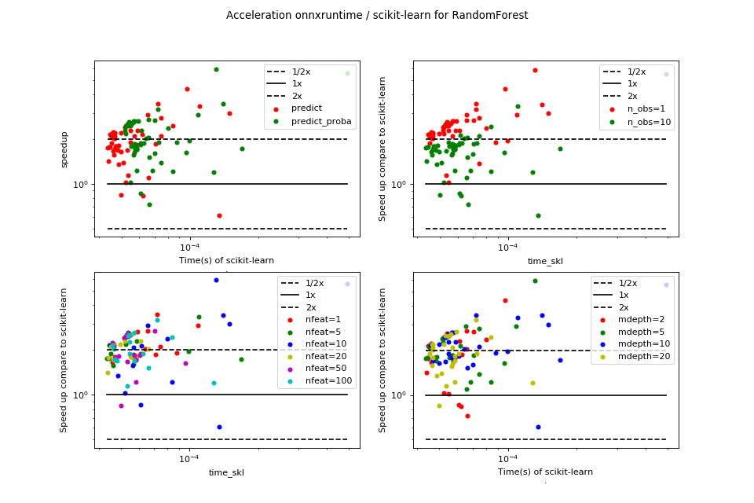

Prediction time scikit-learn / onnxruntime: decision tree¶
Overview¶
(Source code, png, hires.png, pdf)
{kind=link}
{kind=link}

onnxruntime is always faster in that particular scenario.
Raw results¶
bench_plot_onnxruntime_decision_tree.csv
<<<
from pyquickhelper.pandashelper import df2rst
import pandas
name = os.path.join(
__WD__, "../../onnx/results/bench_plot_onnxruntime_decision_tree.csv")
df = pandas.read_csv(name)
df['speedup'] = df['time_skl'] / df['time_ort']
print(df2rst(df, number_format=4))
>>>
| max_depth | method | n_obs | nfeat | time_ort | time_skl | speedup |
|---|---|---|---|---|---|---|
| 2 | predict | 1 | 1 | 2.178e-05 | 4.57e-05 | 2.099 |
| 2 | predict_proba | 1 | 1 | 2.44e-05 | 6.585e-05 | 2.699 |
| 2 | predict | 10 | 1 | 2.773e-05 | 4.596e-05 | 1.657 |
| 2 | predict_proba | 10 | 1 | 3.33e-05 | 5.848e-05 | 1.756 |
| 5 | predict | 1 | 1 | 2.155e-05 | 5.163e-05 | 2.396 |
| 5 | predict_proba | 1 | 1 | 3.73e-05 | 0.0001087 | 2.915 |
| 5 | predict | 10 | 1 | 3.81e-05 | 7.081e-05 | 1.858 |
| 5 | predict_proba | 10 | 1 | 3.142e-05 | 5.706e-05 | 1.816 |
| 10 | predict | 1 | 1 | 2.093e-05 | 7.242e-05 | 3.459 |
| 10 | predict_proba | 1 | 1 | 4.59e-05 | 8.783e-05 | 1.913 |
| 10 | predict | 10 | 1 | 3.543e-05 | 7.477e-05 | 2.11 |
| 10 | predict_proba | 10 | 1 | 3.15e-05 | 6.402e-05 | 2.032 |
| 20 | predict | 1 | 1 | 2.122e-05 | 4.655e-05 | 2.194 |
| 20 | predict_proba | 1 | 1 | 2.232e-05 | 5.933e-05 | 2.657 |
| 20 | predict | 10 | 1 | 2.62e-05 | 4.693e-05 | 1.792 |
| 20 | predict_proba | 10 | 1 | 3.219e-05 | 6.093e-05 | 1.893 |
| 2 | predict | 1 | 5 | 2.059e-05 | 4.445e-05 | 2.158 |
| 2 | predict_proba | 1 | 5 | 2.063e-05 | 5.389e-05 | 2.613 |
| 2 | predict | 10 | 5 | 2.53e-05 | 4.461e-05 | 1.763 |
| 2 | predict_proba | 10 | 5 | 3.116e-05 | 5.679e-05 | 1.823 |
| 5 | predict | 1 | 5 | 2.178e-05 | 4.602e-05 | 2.114 |
| 5 | predict_proba | 1 | 5 | 2.157e-05 | 5.215e-05 | 2.418 |
| 5 | predict | 10 | 5 | 2.475e-05 | 4.352e-05 | 1.758 |
| 5 | predict_proba | 10 | 5 | 3.05e-05 | 5.687e-05 | 1.865 |
| 10 | predict | 1 | 5 | 2.572e-05 | 5.885e-05 | 2.288 |
| 10 | predict_proba | 1 | 5 | 5.044e-05 | 9.905e-05 | 1.964 |
| 10 | predict | 10 | 5 | 3.293e-05 | 0.00011 | 3.339 |
| 10 | predict_proba | 10 | 5 | 9.773e-05 | 0.0001688 | 1.727 |
| 20 | predict | 1 | 5 | 2.402e-05 | 4.539e-05 | 1.89 |
| 20 | predict_proba | 1 | 5 | 2.391e-05 | 5.237e-05 | 2.19 |
| 20 | predict | 10 | 5 | 2.947e-05 | 4.64e-05 | 1.574 |
| 20 | predict_proba | 10 | 5 | 3.511e-05 | 5.68e-05 | 1.618 |
| 2 | predict | 1 | 10 | 2.094e-05 | 4.488e-05 | 2.143 |
| 2 | predict_proba | 1 | 10 | 3.379e-05 | 7.998e-05 | 2.367 |
| 2 | predict | 10 | 10 | 5.076e-05 | 5.216e-05 | 1.028 |
| 2 | predict_proba | 10 | 10 | 7.083e-05 | 6.093e-05 | 0.8603 |
| 5 | predict | 1 | 10 | 2.24e-05 | 6.546e-05 | 2.923 |
| 5 | predict_proba | 1 | 10 | 2.213e-05 | 0.0001305 | 5.897 |
| 5 | predict | 10 | 10 | 2.889e-05 | 6.183e-05 | 2.14 |
| 5 | predict_proba | 10 | 10 | 6.888e-05 | 8.405e-05 | 1.22 |
| 10 | predict | 1 | 10 | 4.994e-05 | 0.0001495 | 2.993 |
| 10 | predict_proba | 1 | 10 | 4.072e-05 | 0.0001404 | 3.448 |
| 10 | predict | 10 | 10 | 0.0002212 | 0.0001349 | 0.6096 |
| 10 | predict_proba | 10 | 10 | 8.854e-05 | 0.0004909 | 5.545 |
| 20 | predict | 1 | 10 | 2.715e-05 | 5.688e-05 | 2.095 |
| 20 | predict_proba | 1 | 10 | 2.186e-05 | 5.518e-05 | 2.524 |
| 20 | predict | 10 | 10 | 3.595e-05 | 4.852e-05 | 1.35 |
| 20 | predict_proba | 10 | 10 | 3.599e-05 | 5.635e-05 | 1.566 |
| 2 | predict | 1 | 20 | 2.173e-05 | 4.532e-05 | 2.086 |
| 2 | predict_proba | 1 | 20 | 2.651e-05 | 6.103e-05 | 2.302 |
| 2 | predict | 10 | 20 | 3.092e-05 | 4.386e-05 | 1.419 |
| 2 | predict_proba | 10 | 20 | 3.23e-05 | 6.601e-05 | 2.044 |
| 5 | predict | 1 | 20 | 2.141e-05 | 4.511e-05 | 2.107 |
| 5 | predict_proba | 1 | 20 | 2.277e-05 | 5.197e-05 | 2.282 |
| 5 | predict | 10 | 20 | 2.491e-05 | 4.429e-05 | 1.778 |
| 5 | predict_proba | 10 | 20 | 3.071e-05 | 5.519e-05 | 1.797 |
| 10 | predict | 1 | 20 | 2.27e-05 | 4.982e-05 | 2.194 |
| 10 | predict_proba | 1 | 20 | 2.138e-05 | 5.25e-05 | 2.456 |
| 10 | predict | 10 | 20 | 2.742e-05 | 4.677e-05 | 1.706 |
| 10 | predict_proba | 10 | 20 | 3.156e-05 | 5.638e-05 | 1.787 |
| 20 | predict | 1 | 20 | 2.126e-05 | 4.675e-05 | 2.199 |
| 20 | predict_proba | 1 | 20 | 2.176e-05 | 5.596e-05 | 2.572 |
| 20 | predict | 10 | 20 | 3.206e-05 | 5.856e-05 | 1.827 |
| 20 | predict_proba | 10 | 20 | 3.42e-05 | 5.847e-05 | 1.71 |
| 2 | predict | 1 | 50 | 2.057e-05 | 4.604e-05 | 2.238 |
| 2 | predict_proba | 1 | 50 | 2.625e-05 | 7.034e-05 | 2.68 |
| 2 | predict | 10 | 50 | 2.653e-05 | 4.739e-05 | 1.786 |
| 2 | predict_proba | 10 | 50 | 3.395e-05 | 5.814e-05 | 1.712 |
| 5 | predict | 1 | 50 | 2.137e-05 | 5.231e-05 | 2.448 |
| 5 | predict_proba | 1 | 50 | 3.102e-05 | 5.724e-05 | 1.845 |
| 5 | predict | 10 | 50 | 2.69e-05 | 4.88e-05 | 1.814 |
| 5 | predict_proba | 10 | 50 | 5.889e-05 | 9.611e-05 | 1.632 |
| 10 | predict | 1 | 50 | 2.185e-05 | 5.371e-05 | 2.458 |
| 10 | predict_proba | 1 | 50 | 2.104e-05 | 5.425e-05 | 2.579 |
| 10 | predict | 10 | 50 | 3.175e-05 | 5.327e-05 | 1.677 |
| 10 | predict_proba | 10 | 50 | 3.305e-05 | 6.086e-05 | 1.841 |
| 20 | predict | 1 | 50 | 2.227e-05 | 4.668e-05 | 2.096 |
| 20 | predict_proba | 1 | 50 | 2.103e-05 | 5.293e-05 | 2.517 |
| 20 | predict | 10 | 50 | 5.908e-05 | 4.999e-05 | 0.8461 |
| 20 | predict_proba | 10 | 50 | 4.775e-05 | 5.833e-05 | 1.222 |
| 2 | predict | 1 | 100 | 2.117e-05 | 4.591e-05 | 2.169 |
| 2 | predict_proba | 1 | 100 | 2.167e-05 | 5.47e-05 | 2.525 |
| 2 | predict | 10 | 100 | 2.724e-05 | 4.714e-05 | 1.731 |
| 2 | predict_proba | 10 | 100 | 3.315e-05 | 6.249e-05 | 1.885 |
| 5 | predict | 1 | 100 | 2.285e-05 | 4.65e-05 | 2.035 |
| 5 | predict_proba | 1 | 100 | 2.159e-05 | 5.379e-05 | 2.491 |
| 5 | predict | 10 | 100 | 2.84e-05 | 4.812e-05 | 1.694 |
| 5 | predict_proba | 10 | 100 | 3.366e-05 | 5.732e-05 | 1.703 |
| 10 | predict | 1 | 100 | 2.403e-05 | 5.475e-05 | 2.278 |
| 10 | predict_proba | 1 | 100 | 2.178e-05 | 5.749e-05 | 2.64 |
| 10 | predict | 10 | 100 | 2.894e-05 | 5.489e-05 | 1.897 |
| 10 | predict_proba | 10 | 100 | 4.369e-05 | 6.636e-05 | 1.519 |
| 20 | predict | 1 | 100 | 4.646e-05 | 5.331e-05 | 1.147 |
| 20 | predict_proba | 1 | 100 | 2.257e-05 | 7.217e-05 | 3.198 |
| 20 | predict | 10 | 100 | 3.431e-05 | 8.403e-05 | 2.449 |
| 20 | predict_proba | 10 | 100 | 0.0001059 | 0.0001274 | 1.204 |
| 2 | predict | 1 | 200 | 2.232e-05 | 9.718e-05 | 4.353 |
| 2 | predict_proba | 1 | 200 | 5.362e-05 | 5.465e-05 | 1.019 |
| 2 | predict | 10 | 200 | 7.445e-05 | 6.221e-05 | 0.8356 |
| 2 | predict_proba | 10 | 200 | 9.158e-05 | 6.652e-05 | 0.7263 |
| 5 | predict | 1 | 200 | 2.675e-05 | 7.468e-05 | 2.792 |
| 5 | predict_proba | 1 | 200 | 5.41e-05 | 7.463e-05 | 1.379 |
| 5 | predict | 10 | 200 | 6.011e-05 | 6.579e-05 | 1.094 |
| 5 | predict_proba | 10 | 200 | 5.584e-05 | 6.824e-05 | 1.222 |
| 10 | predict | 1 | 200 | 2.112e-05 | 4.585e-05 | 2.171 |
| 10 | predict_proba | 1 | 200 | 2.148e-05 | 5.674e-05 | 2.642 |
| 10 | predict | 10 | 200 | 3.016e-05 | 4.971e-05 | 1.648 |
| 10 | predict_proba | 10 | 200 | 4.388e-05 | 7.011e-05 | 1.598 |
| 20 | predict | 1 | 200 | 2.309e-05 | 4.674e-05 | 2.024 |
| 20 | predict_proba | 1 | 200 | 2.212e-05 | 5.478e-05 | 2.477 |
| 20 | predict | 10 | 200 | 3.654e-05 | 5.091e-05 | 1.393 |
| 20 | predict_proba | 10 | 200 | 3.842e-05 | 7.28e-05 | 1.895 |
{kind=link}
{kind=link}
Benchmark code¶
# coding: utf-8
"""
Benchmark of onnxruntime on DecisionTree.
"""
# Authors: Xavier Dupré (benchmark)
# License: MIT
import matplotlib
matplotlib.use('Agg')
from io import BytesIO
from time import perf_counter as time
from itertools import combinations, chain
from itertools import combinations_with_replacement as combinations_w_r
import numpy as np
from numpy.random import rand
from numpy.testing import assert_almost_equal
import matplotlib.pyplot as plt
import pandas
from sklearn.tree import DecisionTreeClassifier
from skl2onnx import convert_sklearn
from skl2onnx.common.data_types import FloatTensorType
from onnxruntime import InferenceSession
##############################
# Implementations to benchmark.
##############################
def fcts_model(X, y, max_depth):
"DecisionTreeClassifier."
rf = DecisionTreeClassifier(max_depth=max_depth)
rf.fit(X, y)
initial_types = [('X', FloatTensorType([1, X.shape[1]]))]
onx = convert_sklearn(rf, initial_types=initial_types)
f = BytesIO()
f.write(onx.SerializeToString())
content = f.getvalue()
sess = InferenceSession(content)
outputs = [o.name for o in sess.get_outputs()]
def predict_skl_predict(X, model=rf):
return rf.predict(X)
def predict_skl_predict_proba(X, model=rf):
return rf.predict_proba(X)
def predict_onnxrt_predict(X, sess=sess):
return numpy.array(sess.run(outputs[:1], {'X': X.astype(np.float32)}))
def predict_onnxrt_predict_proba(X, sess=sess):
res = sess.run(outputs[1:], {'X': X.astype(np.float32)})[0]
# do not use DataFrame to convert the output into array,
# it takes too much time
out = numpy.empty((len(res), len(res[0])), dtype=numpy.float32)
for i, row in enumerate(res):
for k, v in row.items():
out[i, k] = v
return out
return {'predict': (predict_skl_predict,
predict_onnxrt_predict),
'predict_proba': (predict_skl_predict_proba,
predict_onnxrt_predict_proba)}
##############################
# Benchmarks
##############################
def allow_configuration(**kwargs):
return True
def bench(n_obs, n_features, max_depths, methods,
repeat=10, verbose=False):
res = []
for nfeat in n_features:
ntrain = 100000
X_train = np.empty((ntrain, nfeat))
X_train[:, :] = rand(ntrain, nfeat)[:, :]
X_trainsum = X_train.sum(axis=1)
eps = rand(ntrain) - 0.5
X_trainsum_ = X_trainsum + eps
y_train = (X_trainsum_ >= X_trainsum).ravel().astype(int)
for max_depth in max_depths:
fcts = fcts_model(X_train, y_train, max_depth)
for n in n_obs:
for method in methods:
fct1, fct2 = fcts[method]
if not allow_configuration(n=n, nfeat=nfeat, max_depth=max_depth):
continue
obs = dict(n_obs=n, nfeat=nfeat, max_depth=max_depth, method=method)
# creates different inputs to avoid caching in any ways
Xs = []
for r in range(repeat):
x = np.empty((n, nfeat))
x[:, :] = rand(n, nfeat)[:, :]
Xs.append(x)
# measures the baseline
st = time()
r = 0
for X in Xs:
p1 = fct1(X)
r += 1
if time() - st >= 1:
break # stops if longer than a second
end = time()
obs["time_skl"] = (end - st) / r
# measures the new implementation
st = time()
r2 = 0
for X in Xs:
p2 = fct2(X)
r2 += 1
if r2 >= r:
break
end = time()
obs["time_ort"] = (end - st) / r
res.append(obs)
if verbose and (len(res) % 1 == 0 or n >= 10000):
print("bench", len(res), ":", obs)
# checks that both produce the same outputs
if n <= 10000:
if len(p1.shape) == 1 and len(p2.shape) == 2:
p2 = p2.ravel()
assert_almost_equal(p1, p2, decimal=5)
return res
##############################
# Plots.
##############################
def plot_results(df, verbose=False):
nrows = max(len(set(df.max_depth)) * len(set(df.n_obs)), 2)
ncols = max(len(set(df.method)), 2)
fig, ax = plt.subplots(nrows, ncols,
figsize=(ncols * 4, nrows * 4))
pos = 0
row = 0
for n_obs in sorted(set(df.n_obs)):
for max_depth in sorted(set(df.max_depth)):
pos = 0
for method in sorted(set(df.method)):
a = ax[row, pos]
if row == ax.shape[0] - 1:
a.set_xlabel("N features", fontsize='x-small')
if pos == 0:
a.set_ylabel("Time (s) n_obs={}\nmax_depth={}".format(n_obs, max_depth),
fontsize='x-small')
color = 'b'
subset = df[(df.method == method) & (df.n_obs == n_obs)
& (df.max_depth == max_depth)]
if subset.shape[0] == 0:
continue
subset = subset.sort_values("nfeat")
if verbose:
print(subset)
label = "skl"
subset.plot(x="nfeat", y="time_skl", label=label, ax=a,
logx=True, logy=True, c=color, style='--')
label = "ort"
subset.plot(x="nfeat", y="time_ort", label=label, ax=a,
logx=True, logy=True, c=color)
a.legend(loc=0, fontsize='x-small')
if row == 0:
a.set_title("method={}".format(method), fontsize='x-small')
pos += 1
row += 1
plt.suptitle("Benchmark for DecisionTree sklearn/onnxruntime", fontsize=16)
def run_bench(repeat=100, verbose=False):
n_obs = [1, 10]
methods = ['predict', 'predict_proba']
n_features = [1, 5, 10, 20, 50, 100, 200]
max_depths = [2, 5, 10, 20]
start = time()
results = bench(n_obs, n_features, max_depths, methods,
repeat=repeat, verbose=verbose)
end = time()
results_df = pandas.DataFrame(results)
print("Total time = %0.3f sec\n" % (end - start))
# plot the results
plot_results(results_df, verbose=verbose)
return results_df
if __name__ == '__main__':
from datetime import datetime
import sklearn
import numpy
import onnx
import onnxruntime
import skl2onnx
df = pandas.DataFrame([
{"name": "date", "version": str(datetime.now())},
{"name": "numpy", "version": numpy.__version__},
{"name": "scikit-learn", "version": sklearn.__version__},
{"name": "onnx", "version": onnx.__version__},
{"name": "onnxruntime", "version": onnxruntime.__version__},
{"name": "skl2onnx", "version": skl2onnx.__version__},
])
df.to_csv("bench_plot_onnxruntime_decision_tree.time.csv", index=False)
print(df)
df = run_bench(verbose=True)
plt.savefig("bench_plot_onnxruntime_decision_tree.png")
df.to_csv("bench_plot_onnxruntime_decision_tree.csv", index=False)
# plt.show()
Configuration¶
<<<
from pyquickhelper.pandashelper import df2rst
import pandas
name = os.path.join(
__WD__, "../../onnx/results/bench_plot_onnxruntime_decision_tree.time.csv")
df = pandas.read_csv(name)
print(df2rst(df, number_format=4))
>>>
| name | version |
|---|---|
| date | 2019-03-04 15:01:51.138124 |
| numpy | 1.16.2 |
| scikit-learn | 0.21.dev0 |
| onnx | 1.4.1 |
| onnxruntime | 0.2.2 |
| skl2onnx | 1.4.3 |